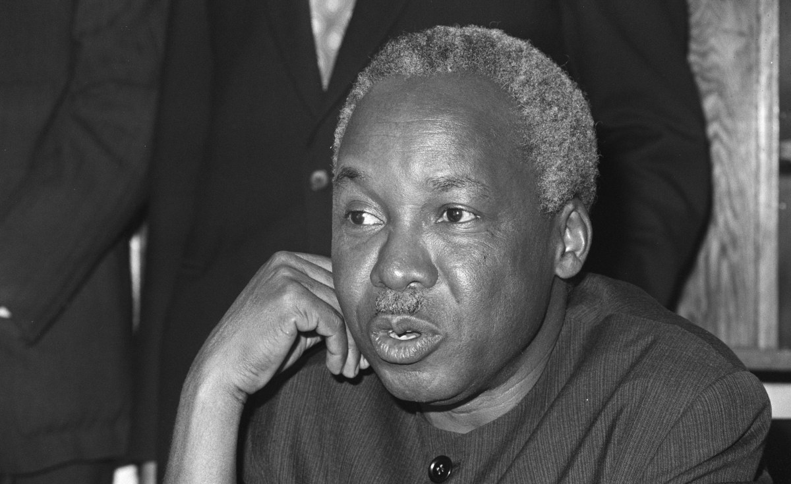

Julius Kambarage Nyerere
First president of Tanzania United Republic

Julius Kambarage Nyerere also Known as Mwalimu the Swahili term for Teacher, He promoted a political philosophy known as Ujamaa.
here's a time line of Julius Kambarage Nyerere
- Julius Kambarage Nyerere was born on 13 April 1922 in Mwitongo, an area of the village of Butiama in Tanganyika's Mara Region.
- At his father's prompting, Nyerere began his education at the Native Administration School in Mwisenge, Musoma in February 1934.
- In October 1942, Nyerere completed his secondary education and decided to study at Makerere College in the Ugandan city of Kampala.
- 1947-1949 - Nyerere returned home to Zanaki territory to build a house for his widowed mother, before spending his time reading and farming in Butiama.
- He proposed marriage to Maria Gabriel and they became informally engaged at Christmas 1948.
- In April 1949, Nyerere flew from Dar es Salaam to Southampton, England, Starting his studies at the University of Edinburgh.
- Nyerere arrive back in Dar es Salaam in October 1952, in April 1953, he was elected president of the Tanganyika African Association (TAA) .
- On 7 July 1954 Nyerere, assisted by Oscar Kambona, transformed the TAA into a new political party, the Tanganyika African National Union (TANU).
- 1955 - Nyerere returned to Dar es Salaam, From then until Tanzania secured independence, he toured the country almost continuously, often in TANU's Land Rover.
- In March 1959, the new British Governor of Tanganyika, Richard Turnbull, gave TANU five of the twelve ministerial posts available in the colony's government.
- On 9 December 1961, Tanganyika gained independence, an event marked by a ceremony at National Stadium.
- On 9 December 1962, a year after independence, Tanganyika became a republic, yerere moved into the State House in Dar es Salaam, the former official residence of British governors.
- 1964 - Unification with Zanzibar.
- 1967-1970 - The Arusha Declaration.
- 1971-1979Economic crises with War with Uganda.
- 1980-1985 - Final term in office.
- 1994-1999 - Final years, in early October he had a major stroke and was placed in intensive care. On 14 October 1999 he then died.